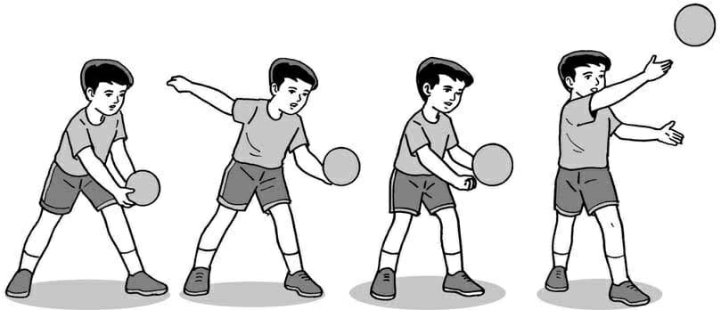
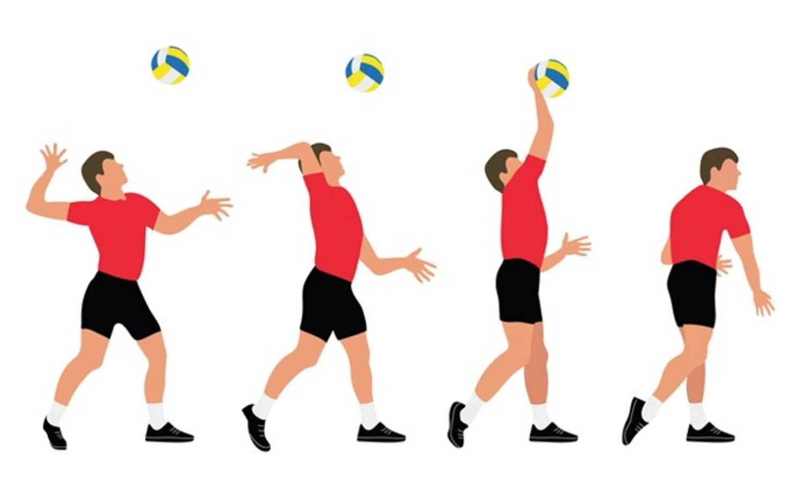
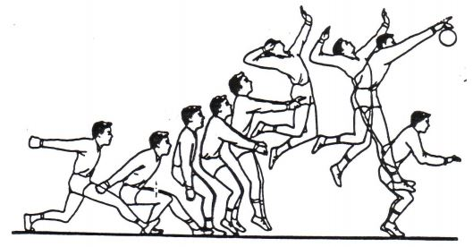
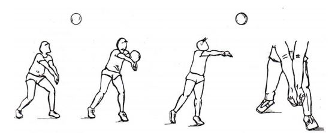
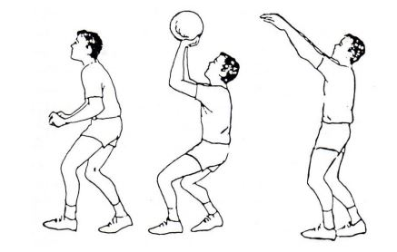
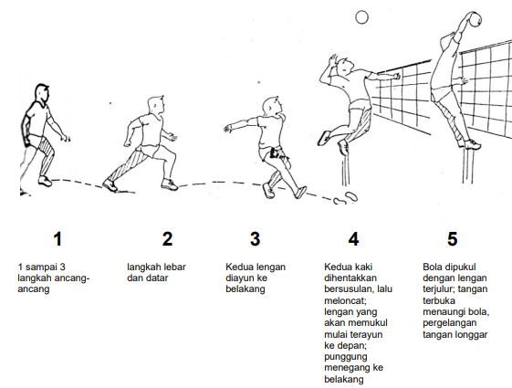
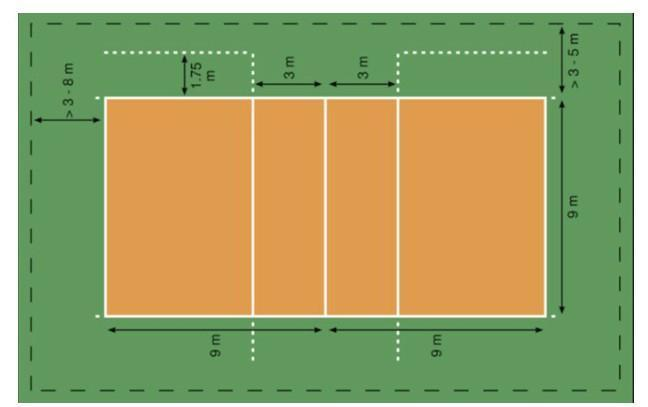

A. Pengertian Pengertian bola Voli
Permainan bola voli termasuk salah satu contoh dari cabang olahraga bola besar. Bisa dikatakan, permainan ini masuk ke dalam kategori pertandingan karena melibatkan dua tim yang saling berhadapan untuk mendapatkan hasil pertandingan.
Cara memainkan bola voli adalah dengan memukul bola agar melewati bagian atas net yang ada di tengah lapangan. Agar mendapatkan skor, para pemain dalam satu tim harus mengarahkan bola ke area lawan, sehingga bola terjatuh di daerah pertahanan lawan.
pengertian bola voli bisa disimpulkan sebagai permainan yang terdiri atas dua regu yang beranggotakan masing-masing enam pemain. Permainan ini diawali dengan memukul bola melewati atas net untuk memperoleh angka tetapi setiap regu dapat memainkan tiga sentuhan untuk mengembalikan bola.
B. Teknik Dasar Permainan Bola Voli
Berikut ini merupakan beberapa tekhnik dasar dalam permainan bola voli :
1. Servis Bola Voli
Servis adalah pukulan bola yang dilakukan dari belakang garis akhir lapangan permainan sampai melewati net menuju ke daerah lawan.
terdapat beberapa servis dalam permainan bola voli , antara lain:
a. Servis Bawah

Langkah-langkah servis bawah :
Berdiri dengan kaki kiri ke depan, kaki kanan di belakang.
Bola dipegang oleh tangan kiri.
Lambungkan bola setinggi bahu.
Pada saat bersamaan ayunkan lengan kanan ke belakang, kemudian pukul bola dengan tangan kanan.
b. Servis Atas

Teknik Servis Atas:
Pegang bola dengan tangan kiri.
Lambungkan bola hingga ke atas kepala.
Pukul bola menggunakan telapak tangan dengan keras agar mampu melewati jaring.
c. Jumping Service atau Servis Melompat

Jumping service dapat dilakukan dengan sikap awal berdiri di belakang garis belakang mengarah ke arah net. Kedua tangan memegang bola,
kemudian bola dilambungkan tinggi kira-kira 3 meter agak didepan badan.
Setelah itu tekuk kedua lutut untuk awalan melakukan lompatan setinggi mungkin.
pukul bola saat berada di atas.
2. Passing Bola Voli
Teknik passing ini memiliki banyak tujuan. Jika kamu menerima bola dari tim lawan, maka kamu bisa menggunakan teknik ini untuk menerima bola, menangkis serangan, dan melakukan serangan balik ke area pertahanan lawan. Dengan passing, kamu juga bisa mengendalikan permainan dengan mengatur strategi tanpa harus membuat bola terjatuh di area timmu.
Beberapa jenis passing adalah sebagai berikut:
a. Passing Bawah

Cara Melakukan Passing Bawah :
Berdiri dengan kedua kaki dibuka selebar bahu.
Rendahkan lutut dan letakkan tumpuan berat bada pada ujung kaki bagian depan.
Rapatkan dan luruskan lengan di depan badan hingga kedua ibu jari letaknya sejajar.
Arahkan pandangan ke tempat datangnya bola.
b. Passing Atas

Cara Melakukan Passing Atas:
Ambil posisi berdiri dengan kedua kaki dibuka selebar bahu.
Rendahkan lutut hingga berat badan bertumpu pada ujung kaki bagian depan.
Posisikan lengan di depan badan.
Renggangkan jari-jari dan telapak tangan hingga menyerupai mangkuk di atas wajah.
Fokuskan pandangan ke arah datangnya bola.
3. Smash
Smash merupakan satu teknik yang digunakan untuk menyerang.
Seringkali, smash dianggap sebagai penentu kualitas serangan sebuah tim.
Oleh karena itu, teknik ini sangat membutuhkan insting membunuh yang tajam.
Tidak hanya itu, teknik ini memerlukan konsentrasi, keakuratan, dan kekuatan.
Berikut ini adalah Langkah-langkah melakukan smash:
4. Blocking
Blocking adalah tekhnik bertahan yang digunakkan pada permainan bola voli.
Blocking dilakukan dengan menahan smash lawan ketika bola akan dipukul menuju daerah pertahanan.
Blocking bertujuan untuk menghentikan serangan/smash lawan agar bola tidak masuk ke area kita dan
dapat bola dapat kembali ke area lawan.
C. Peraturan Dalam permainan Bola Voli
- Permainan dimainkan oleh dua tim yang saling berhadapan.
- Setiap tim dimainkan oleh enam orang pemain yang menempati posisi sebagai spiker, defender, libero, dan tosser.
- Pemain dengan posisi libero menggunakan seragam yang berbeda dari anggota tim lainnya.
- Libero tidak diperbolehkan servis, pergantian posisi, dan melakukan pukulan bola.
- Minimal, dalam satu tim dimainkan oleh empat orang pemain.
- Permainan dimulai dengan servis pertama yang dilakukan oleh tim pemenang undian lempar koin.
- Servis dilakukan dari luar garis lapangan. Dan bola harus melewati atas net, tidak boleh menyentuh net sedikitpun.
- Bola dinyatakan keluar jika keluar garis lapangan.
- Pemain hanya boleh melakukan segala macam teknik di areanya sendiri. Pemain tidak diijinkan masuk ke area lawan.
- Bola dianggap masuk apabila menyentuh lantai lapangan dan masih berada dalam garis lapangan.
- Semua anggota tubuh dapat digunakan untuk memantulkan atau memukul bola. Meskipun demikian, yang paling dominan adalah menggunakan tangan.
- Pemain tidak boleh menangkap dan melempar bola.
- Permainan bola voli berlangsung 2 sampai 3 set. Jika suatu tim memenangkan dua set secara beruntun, maka langsung keluar sebagai pemenang. Namun jika skor imbang 1-1, maka permainan dilanjutkan hingga tiga set.
- Satu set dimenangkan oleh tim yang mencapai skor 25 lebih dulu.
- Jika dalam satu set skor imbang 24-24, maka pemenang ditentukan bukan siapa yang mencapai skor 25 lebih dulu, melainkan tim mana yang unggul dua poin lebih dulu.
- Pergantian pemain boleh dilakukan selama pertandingan masih berlangsung.
bola voli memiliki beberapa peraturan antara lain:
D. Lapangan Bola Voli + Ukuran
- Ukuran lapangan : 9 m x 18 m
- Area servis : 3 m di belakang garis lapangan
- Area serang : 3 m dari garis tengah
- Lebar garis lapangan : 5 cm